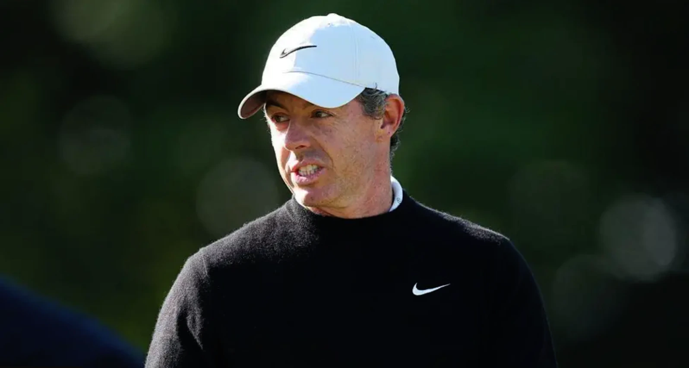

GUIDES
The Biggest 'Golf Deal' Search in America Is a Resort in North Carolina
Destination searches beat equipment 3.5 to 1 in US \
Golf news without the press-release language. Every story is what it is.
Destination searches beat equipment 3.5 to 1 in US \

LIV Golf says it has a signed lead investor and players will be majority owners. It won't name the investor or the amount. What was actually announced.

Jason Day and Keegan Bradley arrive at the 2026 Wyndham Championship on the FedExCup bubble. Explore odds, playoff scenarios and Sedgefield course trends before you bet.

40,500 people a month search for beginner golf clubs. 590 ask what a handicap is. What the search data reveals about how beginners are being sold to.

Cam Smith says he'd \

Everything you need to know about what to wear to Topgolf, from the official dress code rules to what footwear is allowed (and what to avoid).

LIV Golf has reportedly terminated staff contracts with 30 days' notice as the Saudi-backed league faces bankruptcy speculation and fights for survival beyond 2026.

Cameron Young defends at Sedgefield as FedExCup playoff race hits fever pitch. Betting tips, fantasy picks, course guide, bubble standings and key stats.

The road to Adare Manor begins at The Belfry on August 27. Key dates, the points structure, Luke Donald's record and everything you need to know about the 2027 Team Europe qualifying race.

New survey data exposes handicap manipulation, unfair scoring, and the real reasons players are losing interest in the most popular team format in golf.

From 0.9-point heartbreaks to pregnancy and broken wrists, here are 8 major stars missing the 2026 Solheim Cup at Bernardus Golf and why.

Detroit spent $16.1m to get harder and gave up three 61s. Sedgefield defends itself with a quarter-inch of rough and 12½-foot greens.
LIV Golf's bankruptcy story has one source.

Three 61s in three days at Detroit Golf Club.

Yealimi Noh leads by 3.

Jeeno Thitikul opened with a bogey-free 64 to lead the AIG Women’s Open, while Charley Hull and Lottie Woad shot contrasting two-under 69s.

Haeran Ryu shot a five-under 66 to finish seven strokes ahead of Nelly Korda in round one, although Jeeno Thitikul took the AIG Women’s Open lead.

Nelly Korda shot a 2-over 73 in Round 1 of the 2026 AIG Women's Open, leaving her nine shots off the lead as she chases the career Grand Slam.

Haeran Ryu shot a 5-under 66 at Royal Lytham & St Annes in Round 1 of the 2026 AIG Women's Open, staying two shots off Jeeno Thitikul's lead.

Viktor Hovland, Kristoffer Reitan and the Højgaard twins are launching The Viking, a new Denmark–Norway team golf event. Here is what is confirmed for 2027.

He tested positive, accepted a six-month ban, and hasn't played since April. So the suspension costs him almost no golf. It costs him his card.

Nicklaus earned $5.73m across 73 PGA Tour wins. Jackson Koivun banked $1.58m in one afternoon last Sunday. The maths is genuinely absurd.

Royal Lytham is 778 yards longer than in 2003 and has lost two shots of par. How the historic 2026 AIG Women's Open layout actually compares.

The full hole-by-hole card for the rebuilt par-70 Detroit Golf Club is out. 12 par 4s averaging 450 yards, a 246-yard par 3, and a 1906 correction.

Written commitments aren't money. And at LIV's own burn rate, $250 million covers about two and a half months. The report, and the arithmetic nobody ran.

He typed the restaurant into Google Maps, paid a $9 toll, and ended up surrounded by eight border officers. What he said to the lead one is the best bit.

See South Dakota State women’s golf’s full 2026–27 schedule, dates, locations, roster turnover and path to defending its Summit League title.

Follow the 2026 PGA Tour with the latest schedule, official leaderboard links, FedExCup rankings and Australian TV and streaming information.

Detroit Golf Club has become a longer par-70 test. Compare the best 2026 Rocket Classic fantasy picks, captain choices, risks and current odds.
Korda and Ryu go out together at 8.42am Thursday. Charley Hull plays late, then early — the opposite half of the draw. Full marquee times in BST.

If LIV folds, Thomas Pieters has no DP World Tour status and no PGA Tour interest. His plan is Q School — the same test he passed at 21.

Romo pulled out of the Texas State Open after a Milwaukee OWI arrest. He was booked, not charged, and most coverage is getting that distinction wrong.
Detroit Golf Club is a par 70 now, not a par 72. So every \

Cameron Young leads the 2026 Rocket Classic odds, but Detroit Golf Club’s $16 million renovation makes this week’s betting outlook more complicated.

One word changed between the interview and the headline, and it flips the meaning. What Nick Faldo actually said about LIV Golf, and what got cut.

One win, five runner-ups, still top of the FedExCup. Three numbers explain what actually changed in Scottie Scheffler's 2026 — and one of them is brutal.

The claim is that his conduct since Birkdale is worse than the meltdown itself. I checked the eight days. It mostly isn't — with one exception.

Everyone called it an AimPoint protest. Glover says it wasn't, and the person who set him off wasn't his playing partner. What actually happened.

Jackson Koivun, 21, won the 3M Open by three at a record 25 under — 24 days into his pro career, with the world No. 1 chasing him all afternoon.

Lucas Herbert won LIV Golf UK by six at 30 under, called the lowest winning score in league history. Here's the detail nobody else reported.

If the 2026 3M Open purse is $8.8M, the winner earns $1.584M at TPC Twin Cities. Here is the projected payout breakdown.

He won 11 times at Auburn, swept every player of the year award twice, and turned pro six weeks ago. Here's who Jackson Koivun actually is.

Herbert won LIV Golf UK by six at 30 under — the lowest winning score in league history. But there's a catch nobody's mentioning about that record.

She led by eight, shot 75, and still won. Inside Jenny Shin's second LPGA title — a decade after her first — at a brutal Dundonald Links.

Muzzy Donohue nearly shot 59 at his hometown PGA Tour debut, days after losing his grandmother. Here's how a wild week unfolded.

Michael Kim needed one putt from 24 feet to shoot 59. Here's how he pulled off just the 16th sub-60 round in PGA Tour history.

Max Homa's spent years watching Rory McIlroy up close. His take on how McIlroy's swing has changed isn't what you'd expect.

James Madison men's golf just released its 2026-27 schedule. From Phoenix to Cancún, where are the Dukes headed next season?

DeChambeau says he was \

No bogeys. Nine birdies. An eagle. Herbert didn't just win day one at JCB, he torched it.

Schauffele called him a world-beater in Detroit on Tuesday. Scheffler had said something almost identical two days earlier. Nobody's put them together.

Nos. 7 and 17 now play 505 and 537 yards. The purse is $10m, the winner takes $1.8m, and Rocket has declined its 2027 option. Every confirmed number.

The Tour's own fantasy analyst says all 147 players start at zero this week. Here's why, the stat that proves it, and the correction we owe you.

Bone-dry fairways turned Dundonald Links into a minefield. Two players tamed it. One major champion did not. Here's how round one unfolded.

One week he couldn't find the hole. The next he's carding 65 and torching the field on the greens. Here's what actually happened.

From Hannah Green's Scottish homecoming at Dundonald Links to Scott Hend's hot streak at Gleneagles, here's every Australasian storyline worth tracking across this week's LPGA, Senior, PGA TOUR and LIV Golf action.

PGA TOUR winner Corey Conners headlines the BMW Australian PGA Championship's return to The Lakes in Sydney this November, with a Presidents Cup carrot dangling for 2028. Here's the full breakdown.

Martin Kaymer says the LIV Golf Team Championships in Michigan are all but dead, with a September funding deadline and the loss of the Asian Tour throwing the league's 2027 future into serious doubt.

Scottie Scheffler refuses to take sides in the Bryson DeChambeau-Rory McIlroy cold war, but he's not staying quiet about the Open Championship penalty that started it all. Here's what the world No. 1 actually said.

A late start, a 5-foot-4 frame, and a state tournament near-miss didn't stop Lillie Cone from becoming a four-year Purdue Fort Wayne golfer. Here's her path from DeKalb High School to a senior season — and a teaching career waiting on the other side.

The Asian Tour just gained a path to bigger stages. Here’s what the PGA TOUR-DP World Tour alliance really changes.

A two-shot penalty became a full-blown spectacle at The Open. Bryson DeChambeau’s reaction raised a bigger question for golf.

Tommy Fleetwood got within one shot of The Open lead. Two late bogeys left Southport dreaming—and five shots back.

Ryan Fox won The Open Championship by refusing to overthink. His 22-second winning putt is a brutal lesson for slow golf.

Si Woo Kim called his Sunday at the 2026 Open Championship 'another choke' after leading alone at Royal Birkdale.

A two-shot penalty. A late-night standoff. Now Bryson DeChambeau is accused of invoking President Trump in the fight.

Jon Rahm opened with another ball out of bounds, tore his glove apart, and watched his Open hopes fade in seconds.

Bryson’s two-shot Open penalty sparked a late-night standoff. Rory McIlroy’s response was colder—and far more damaging.

Ryan Fox blew up The Open leaderboard with a 62. Then Rory McIlroy went straight at Bryson DeChambeau.

Rory McIlroy did not hold back after Bryson DeChambeau’s Open penalty—calling the drama “performative” and attention-seeking.

Ryan Fox matched the major record with a 62 at Royal Birkdale as Bryson DeChambeau stayed in the fight.

Tommy Fleetwood is within two shots at Royal Birkdale, but Scheffler, MacIntyre and DeChambeau are not going away.

Lucas Herbert missed a 5-foot putt for golf's first-ever 61. Minutes later, Sam Burns matched his 62. How two players tied the major record on the same Open Friday.

Dan Brown, the chain-smoking Englishman who stunned The Open in 2024, leads the home charge again at Birkdale, while six-time major champ Rory McIlroy fights the cut.

Nick Faldo said Bryson DeChambeau has zero clue about links golf. DeChambeau shot 67 and fired back, while Jackson Suber, who had never seen Europe, led The Open after Round 1.

He wants the Claret Jug more than anyone. Robert MacIntyre opened The Open with a drone delay and a 67, and his patient plan at Birkdale should scare the field.

Jerry Rice is 63 and still sprinted after a fan who heckled him mid-round at a celebrity golf event. What set the NFL legend off, and why it's not his first confrontation at Lake Tahoe.

Scheffler and McIlroy top the Royal Birkdale odds, but the favourite just missed a cut and The Open loves a surprise. The first-time winners who could steal the jug.

\

The R&A's new Open Championship exemption changes seem designed with one player in mind. Here is why Scottie Scheffler doesn't need to worry—but other PGA stars do.

Joe Dean drove a supermarket van to fund his golf. On Monday, with his fiancée caddying eight days before their wedding, he won the last spot in The Open at Birkdale.

They called each other enemies in 2015. Then they played 100 hours of golf. Inside the tee times that turned Trump and Lindsey Graham into unlikely allies.

Stop chasing perfect social media swings. Raw golf is the honest guide to practice, pressure-free play, and real improvement for golfers with busy lives.

Tom Kim ended his PGA TOUR drought in Scotland, jumped to 32nd in the FedExCup, and secured his status through 2028. Here’s why this win matters.

She had it. For a moment, Aki Iwai had a major championship in her hands at Evian. Then it slipped, by one stroke, in front of a packed final round crowd.

The Play Golf Myrtle Beach World Amateur Handicap Championship officially closed registrations after hitting its strict field limit, cementing the event's status as a summer major for ordinary golfers.

England captain Harry Kane details his surreal round of golf with Donald Trump in Palm Beach during World Cup quarter-final week, highlighting Trump's impressive swing longevity.

Haeran Ryu fired an 11-under 60 in the third round of the 2026 Evian Championship, marking the lowest single-round score in golf major history across men's, women's, and senior play.

Rory McIlroy enters Moving Day at the Renaissance Club sharing the lead, but with 12 players within two shots and 37 within five, the stage is set for a crowded Saturday shootout.

Rory McIlroy shoots 66 to grab the co-lead at the Genesis Scottish Open, while world No. 1 Scottie Scheffler misses his first cut in nearly four years, snapping a 78-tournament streak.

Aki Iwai fires a clinical 8-under to build a multi-shot lead in France, while world No. 1 Nelly Korda scrambles on the cut line in her high-stakes career Grand Slam bid.

The world No. 1's historic streak of 78 consecutive made cuts came to a crashing end in Scotland. We analyze the stats, the links variance, and what it means for Birkdale.

We break down the economics of model lifecycles, handicap-based ball fitting, used lake ball grading, and how to spot artificial markdown traps online.

We analyze links golf variance, course history at The Renaissance Club, and why backing Scottie Scheffler at +500 represents poor market value. Plus outrights, DFS plays, and key fades.
The PGA of Australia has named former ACMA Chairman and Royal Sydney President Chris Chapman as an Independent Director to its board, bringing heavy regulatory and venue expertise.

Jon Rahm issued a careful non-answer at his Scottish Open press conference when asked about a personal Jon Rahm LIV Golf investment, highlighting the looming LIV Golf funding crisis 2027.

Rory McIlroy warns that the PGA Tour's 2028 schedule overhaul threatens the Genesis Scottish Open, exposing structural tension between a closed Championship Series and traditional National Opens.

Tom Doak's par-71 layout challenges the definition of traditional links. Read our expert course architecture guide to the Scottish Open's home in North Berwick, the signature holes, and the impact of wind.

Colin Montgomerie hit two aces in one round at the grand opening of the Wee Course at Harbor Shores. Read the full story on this legendary moment for local youth golf and community revitalization.

Scottie Scheffler's odds, Rory McIlroy's course history, and Jon Rahm's return highlight a ferocious field at The Renaissance Club. Read our updated power rankings and contenders preview.

Scottie Scheffler headlines the field and officially returns the Claret Jug at Royal Birkdale's new showcase event, the Heroes Classic. Learn how to get practice day tickets.

Fresh off a 63 at the John Deere Classic, Lucas Glover gave the most honest player take yet on the 2028 overhaul, explaining why the controversial Challenger Series ban makes commercial sense.

Rory McIlroy brought Augusta National to Centre Court, wearing his Masters green jacket to Wimbledon. Here is the story behind golf's ultimate fashion flex.

Legalized sports betting is driving hostile fan behavior on the PGA Tour. Jordan Spieth warns that unlike other sports, golf fans can directly influence the outcome of wagers.

The field for the 154th Open Championship is taking shape. Explore our GEO-optimized guide on the exemption categories, the global qualifying series, and the high-drama Monday shootout.

Viktor Hovland took home a massive payout for his playoff win, but the cash ran deep at TPC River Highlands. Read the full prize money purse breakdown.

Viktor Hovland defeated Scottie Scheffler in a sudden-death playoff after a weather delay pushed the Travelers to Monday. Inside the dramatic moment that decided the tournament.

Chris Gotterup and Ben Griffin head a wide-open field at TPC Deere Run. Read our John Deere Classic power rankings, course preview, and predictions.

Most amateurs overestimate their golf club distances, costing themselves green hit percentage. We present an honest golf club distance chart and analyze how to find your real, repeatable numbers.

J.T. Poston carded a nightmare 12 on the par-5 13th during the final round of the Travelers Championship, suffering a historic meltdown driven by three consecutive shots in the water.

Collin Morikawa carded a career-low-tying 61 to capture the Travelers Championship clubhouse lead. Minutes later, lightning forced a weather delay with the contenders still on the course.

Donald Trump has announced plans for a Tom Fazio redesign of East Potomac, claiming it could host a U.S. Open or Ryder Cup. We take an honest, logistical look at the feasibility of a major championship on Hains Point.

Viktor Hovland brought more than a hot game to Cromwell—he brought a rowing, chanting football gallery of countrymen. Inside the Travelers' viral, good-natured crowd takeover.

The foundation of every good swing begins with your hands. We break down finger placement, strong vs weak grips, and how to eliminate tension in this step-by-step guide.

NIU Huskies golf has hired former Menlo assistant Ryan Stefko. We analyze what his dual-program development experience brings to John Carlson and Kim Kester's staffs.

Brooke Henderson sits just one shot off the lead at Hazeltine, chasing her third major title on the very week her niece Sahalee was born. Inside Sunday's high-stakes LPGA setup.

Tucked away by Lake Delta, Teugega Country Club ranks as one of the country's most pristine Donald Ross designs. We explore its rich history and architectural genius.

Viktor Hovland fired a 6-under 64 to snatch a one-shot lead over Scottie Scheffler at 20-under par. We analyze Saturday's high-stakes Moving Day battle at TPC River Highlands.

Following his official Open withdrawal, Phil Mickelson is set to record his first year of missed majors in 2026, bypassing Royal Birkdale. We analyze the timeline and facts.

Tommy Fleetwood returns to TPC River Highlands seeking redemption after a heartbreaking loss. We analyze how his first PGA Tour win at the Tour Championship changed everything.

Even elite tour pros get sabotaged by the wrong driver. Discover what Matt Fitzpatrick's driver switch teaches us about golf driver fitting and matching your club vs swing.

Following the recent Golf Digest report and Alan Shipnuck biography, the Phil Mickelson misconduct allegations have led to club departures and a retreat from public life.

Scottie Scheffler fired a 10-under 60 in Friday's second round at TPC River Highlands, coming within one putt of a 59 before shrugging it off in classic fashion.

Eric Cole stuns the field with a 63 to lead the Travelers Championship Round 1, but world No. 1 Scottie Scheffler and Matt Fitzpatrick lurk just one back.

Midland Christian standout and Wrangler alum Bryce Waters returns to West Texas as the new head Odessa College Golf Coach for both the men's and women's programs.

Buy a proven TaylorMade SIM2 Max at a fraction of new-release prices, or tune your Qi10 or Paradym Ai Smoke with custom weights. The smartest tee upgrades for 2026.

McIlroy turned down a $20M Signature Event to walk Royal Birkdale three weeks early — and bumped into the only man who truly understood why. Inside the most revealing off-week in golf.

UT Arlington Men's Golf continues its transfer portal overhaul, adding Santa Clara graduate Joseph Hayden. We break down what Hayden brings to the Mavericks.

The PGA Tour is policing fans who heckle players over lost bets—while cashing checks from the sportsbooks that fuel it. Inside golf’s toxic, lucrative wagering dilemma.

Golf crowds are getting louder, more partisan, and occasionally hostile. We analyze the forces driving this shift and what it means for the game.

The PGA Tour's newly announced 2028 restructure establishes a clean, two-tier split. We analyze the fallout and expose who gets squeezed.

Scottie Scheffler is the clear favorite, but TPC River Highlands is short and scoreable, presenting massive value on undervalued names down the board.

Country star Kane Brown was hit in the head by a stray golf ball, forcing him to cancel a major Nashville performance.

A complete guide to the PGA Championship winners, from Aaron Rai in 2026 back through the modern era, plus the all-time records.

We break down the structural changes for 2028: two tiers, promotion, and relegation. Plus, the big questions the Tour hasn't answered yet.

Nelly Korda goes for her third straight major at the KPMG Women's PGA, while Scottie Scheffler and Wyndham Clark headline the Travelers Championship.

Rolapp will add the commissioner title to his CEO role in 2027, taking over from Monahan. Here is what the massive leadership shift means for the Tour.

Woods returned to the public eye at the Travelers Championship to introduce the PGA Tour's new 2028 structure. Here is what happened and the context behind his brief return.

Promotion and relegation, a match-play Tour Championship, and no sponsor exemptions. Here is the honest breakdown of the PGA Tour's massive 2028 overhaul.

The final Signature Event of the year brings a $20M purse and a loaded field to TPC River Highlands. Here is your honest preview.

The 2026 championship at Hazeltine ties the U.S. Women's Open with a historic $12 million purse. Here is what the massive payday means for the women's game.

Korda arrives at Hazeltine as the clear favourite for the KPMG Women's PGA Championship, hunting her third consecutive major of 2026 — a feat not achieved since Sorenstam in 2003.

From Wyndham Clark's gritty 2026 triumph back to 1895, see the complete year-by-year list of U.S. Open champions and all-time tournament records.

Scottie Scheffler didn't dodge questions about the hostile Shinnecock crowd. Here is his honest take on the heckling and his praise for Wyndham Clark.

Clark held off a charging Sam Burns and a hostile Shinnecock crowd to complete a dramatic wire-to-wire victory. Full analysis.

A clutch birdie at the 16th has Wyndham Clark two shots clear with two to play. Sam Burns is in the clubhouse at 3 under. The dramatic finish is here.

Coronation Turned Nail-Biter: After a brutal front nine, Wyndham Clark is in a dogfight with Sam Burns. Live developing story from Shinnecock.

The complete purse and prize money breakdown for the 2026 US Open. See exactly how much the winner and the rest of the field take home.

Everything you need to follow Sunday's finish at Shinnecock Hills. Full TV schedules, streaming options, and key pairings.

World No. 1 Scheffler plays the final group on his 30th birthday, chasing a career Grand Slam. Can he overturn a historic six-shot deficit at Shinnecock?

Clark shot an even-par 70 on Saturday to push his lead to six strokes. Only Scheffler and history stand in his way on Sunday.

Friday's best and worst at Shinnecock: record-setting moments, brutal collapses, and the shots that defined Round 2.

Wyndham Clark sets a Shinnecock scoring record while Dustin Johnson collapses. The full Round 2 recap.

Niemann breaks his silence on the two-shot misconduct penalty that turned his sixth hole into an 11.

Clark's record 64 leads as the wind splits the draw and Scheffler grinds out a 72 to keep the Grand Slam alive.

Soft greens and a record 64 raise the question: did the USGA make Shinnecock Hills too easy in 2026?

Thick rough, pinched fairways, baked greens. Why the U.S. Open is built to find the player who cracks the least.

The setup, the contenders, and Scheffler's Grand Slam shot at the toughest test in golf.

A comprehensive guide to golf's four majors: The Masters, PGA Championship, U.S. Open, and The Open Championship. Includes 20-year winner tables and history.

How to play your first amateur tournament for real: nerves, rules, and prep without the fluff.

A tactical autopsy of Greg Norman's 1996 Masters collapse and the six shots that handed Faldo the green jacket.

How Jean van de Velde lost the 1999 Open at Carnoustie on the 72nd hole. A shot-by-shot breakdown.

Scheffler's footwork looks broken, but the data says it's the most powerful move on tour. A frame-by-frame breakdown.

Tired of slicing? What an over-the-top move is, why you do it, and the simple drills that fix your path.

Simple tempo, sequence, and path drills you can do at home to fix your swing and hit it straighter for good.

Grip, posture, tempo drills, and the actual biomechanics of speed. The no-fluff guide to the golf swing.

Why golf's ugliest footwork produces elite, repeatable speed. A breakdown of Scheffler's move.

The Ladies Professional Golf Association, founded in 1950, runs the top women's tour. How it works and how it differs from the PGA.

The LPGA average is 256 yards. How their TrackMan numbers expose the biggest flaw in the average amateur's swing.

First time at TopGolf? Don't stress. Here is exactly what to expect, how it works, and tips for beginners to have the best experience.

Planning a trip to TopGolf? Here is the complete TopGolf dress code guide, including rules on sandals, flip-flops, and what to wear for a great time.

How it works, what it costs, and whether it actually helps your golf game. No clubs needed.

How many clubs you really need, new versus used, and where to save your money as a beginner.

Which swing analysis apps matter, which free tools actually work, and when it's worth paying for an upgrade.

Most amateurs buy gear meant for pros. The raw truth about swing speed, shaft flex, and equipment ego.

The raw mindset for real improvement. How to actually get better at golf instead of chasing quick fixes.

Discover Scottie Scheffler's complete What's in the Bag (WITB) for 2026. Explore his driver, irons, wedges, and the putter setup driving his success.

The stat that powers every rating. What Strokes Gained measures and how to read a leaderboard with it in five minutes.

One is a 72-hole mental math test, the other is a street fight. Why the PGA Tour is terrified of match play.